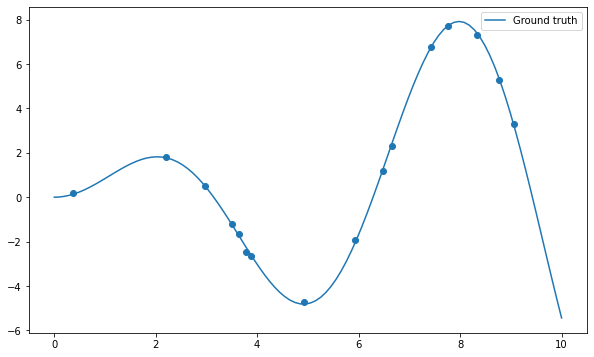
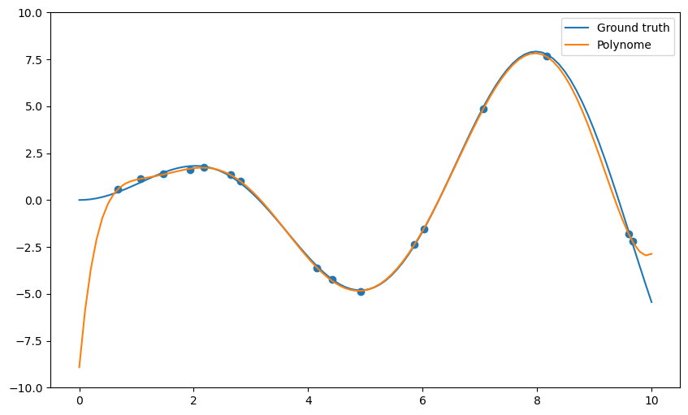
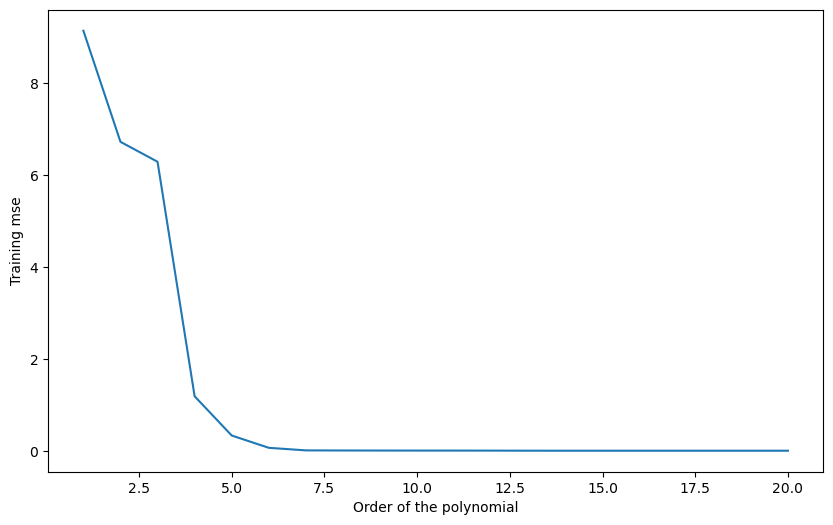
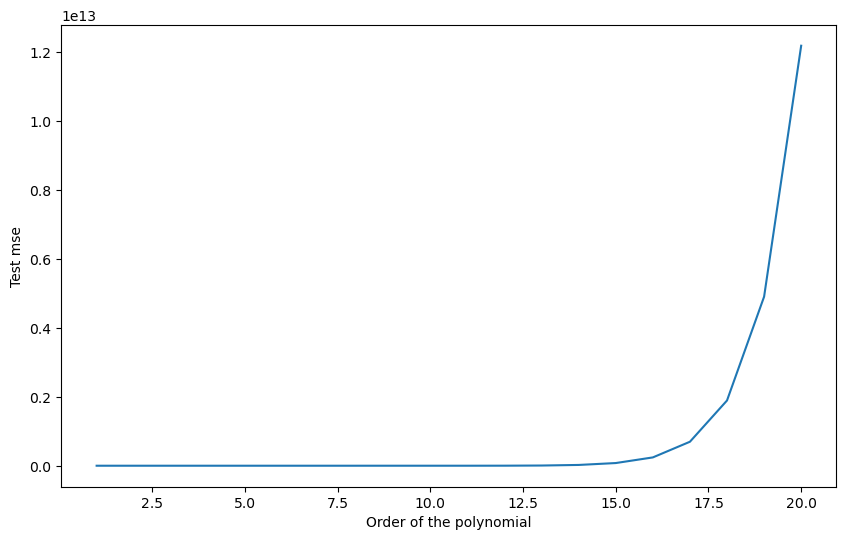
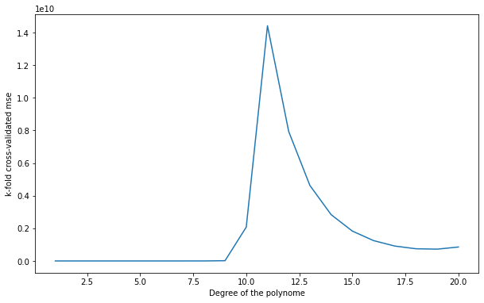
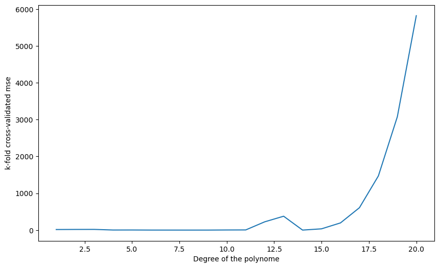

import numpy as np
import matplotlib.pyplot as plt
# Just to avoid the annoying warnings, please ignore
def warn(*args, **kwargs):
pass
import warnings
warnings.warn = warn
def create_dataset(N, noise):
"Creates a dataset of N points generated from x*sin(x) plus some noise."
x = np.linspace(0, 10, 300)
rng = np.random.default_rng()
rng.shuffle(x)
x = np.sort(x[:N])
t = x * np.sin(x) + noise*rng.uniform(-1.0, 1.0, N)
return x, t
N = 16
X, t = create_dataset(N, noise=0.2)Cross-validation and polynomial regression
Polynomial regression
Polynomial regression consists of fitting some data (x, y) to a n-order polynomial of the form:
y = f(x) = b + w_1 \cdot x + w_2 \cdot x^2 + ... + w_n \cdot x^n
By rewriting the unidimensional input x into the following vector:
\mathbf{x} = \begin{bmatrix} x & x^2 & ... & x^n \end{bmatrix}^T
and the weight vector as:
\mathbf{w} = \begin{bmatrix} w_1 & w_2 & ... & w_n \end{bmatrix}^T
the problem can be reduced to linear regression:
y = \langle \mathbf{w} \cdot \mathbf{x} \rangle + b
and we can apply the delta learning rule to find \mathbf{w} and b:
\Delta \mathbf{w} = \eta \, (t_i - y_i ) \, \mathbf{x_i} \Delta b = \eta \cdot (t_i - y_i )
A first method to perform polynomial regression would be to adapt the code you wrote in the last exercise session for linear regression. However, you saw that properly setting the correct learning rate can be quite tricky.
The solution retained for this exercise is to use the built-in functions of Numpy which can already perform polynomial regression in an optimized and proved-sure manner (Note: NumPy does not use gradient descent, but rather directly minimizes the error-function by inversing the Gram matrix).
w = np.polyfit(X, t, deg)This function takes the inputs X, the desired outputs t and the desired degree of the polynomial deg, performs the polynomial regression and returns the adequate set of weights (beware: the higher-order coefficient comes first, the bias is last).
Once the weights are obtained, one can use them to predict the value of an example with the function:
y = np.polyval(w, X)Note: if you prefer to use scikit-learn, check https://scikit-learn.org/stable/auto_examples/linear_model/plot_polynomial_interpolation.html but see https://towardsdatascience.com/polynomial-regression-with-scikit-learn-what-you-should-know-bed9d3296f2 for why it may be a bad idea.
Let’s start by importing the usual stuff and create a dataset of 16 samples generated using the function x \, \sin x plus some noise:
x = np.linspace(0, 10, 100)
plt.figure(figsize=(10, 6))
plt.plot(x, x*np.sin(x), label="Ground truth")
plt.scatter(X, t)
plt.legend()
plt.show()
Q: Apply the np.polyfit() function on the data and visualize the result for different degrees of the polynomial (from 1 to 20 or even more). What do you observe? Find a polynomial degree which clearly overfits.
deg = 10
# Polynomial regression
w = np.polyfit(X, t, deg)
# Inference on the training set
y = np.polyval(w, x)
plt.figure(figsize=(10, 6))
plt.plot(x, x*np.sin(x), label="Ground truth")
plt.plot(x, y, label="Polynome")
plt.scatter(X, t)
plt.ylim((-10., 10.))
plt.legend()
plt.show()
Q: Plot the mean square error on the training set for all polynomial regressions from 1 to 20. How does the training error evolve when the degree of the polynomial is increased? What is the risk by taking the hypothesis with the smallest training error?
training_mse = []
degrees = range(1, 21)
for deg in degrees:
w = np.polyfit(X, t, deg)
y = np.polyval(w, X)
mse = np.mean((t-y)**2)
training_mse.append(mse)
print("Degree", deg, ": training error", mse)
plt.figure(figsize=(10, 6))
plt.plot(degrees, training_mse)
plt.xlabel("Order of the polynomial")
plt.ylabel("Training mse")
plt.show()Degree 1 : training error 12.040390187866535
Degree 2 : training error 10.875215511427697
Degree 3 : training error 9.72130992005902
Degree 4 : training error 1.013275849205464
Degree 5 : training error 0.6554057884023228
Degree 6 : training error 0.10045095302800439
Degree 7 : training error 0.014213994513393955
Degree 8 : training error 0.0034403058897094084
Degree 9 : training error 0.0034237572576303627
Degree 10 : training error 0.0034237252284956216
Degree 11 : training error 0.002368908807055285
Degree 12 : training error 0.0015870603333565426
Degree 13 : training error 0.00104481788854725
Degree 14 : training error 1.49961699852604e-08
Degree 15 : training error 2.512531648830143e-15
Degree 16 : training error 4.444342304484706e-15
Degree 17 : training error 5.355915227708014e-16
Degree 18 : training error 5.833350451392072e-16
Degree 19 : training error 4.220566952479118e-16
Degree 20 : training error 1.1832546556704793e-16
A: The more complex the model, the smaller the training error.
Simple hold-out cross-validation
You will now apply simple hold-out cross-validation to find the optimal degree for the polynomial regression. You will need to separate the data set into a training set S_{\text{train}} (70% of the data) and a test set S_{\text{test}} (the remaining 30%).
The data (X, t) could be easily split into two sets of arrays using slices of indices, as the data is already randomized:
N_train = int(0.7*N)
X_train, t_train = X[:N_train], t[:N_train]
X_test, t_test = X[N_train:], t[N_train:]A much more generic approach is to use the library scikit-learn (https://www.scikit-learn.org), which provides a method able to split any dataset randomly.
You can import the method train_test_split() from its module:
from sklearn.model_selection import train_test_splitThe doc of the function is available at: https://scikit-learn.org/stable/modules/generated/sklearn.model_selection.train_test_split.html.
Q: Use scikit-learn to split the data into the corresponding training and test sets. Train each polynomial from degree 1 to 20 on S_{\text{train}} and plot the generalization error on S_{\text{test}}. Which degree of the polynomial gives the minimal empirical error? Why? Run the cross-validation split multiple times. Do you always obtain the same optimal degree?
X_train, X_test, t_train, t_test = train_test_split(X, t, test_size=0.3)
degrees = range(1, 21)
test_mse = []
for deg in degrees:
# Train on the training set
w = np.polyfit(X_train, t_train, deg)
# Test on the test set
y_test = np.polyval(w, X_test)
mse = np.mean((t_test-y_test)**2)
test_mse.append(mse)
print("Degree", deg, ": empirical error", mse)
plt.figure(figsize=(10, 6))
plt.plot(degrees, test_mse)
plt.xlabel("Order of the polynomial")
plt.ylabel("Test mse")
plt.show()Degree 1 : empirical error 9.227259124556571
Degree 2 : empirical error 7.121999332462833
Degree 3 : empirical error 7.800338997175413
Degree 4 : empirical error 2.923789248256516
Degree 5 : empirical error 1.9088688058251706
Degree 6 : empirical error 0.8374409236089155
Degree 7 : empirical error 0.1014285554051753
Degree 8 : empirical error 0.3225130019507089
Degree 9 : empirical error 3.634336627210941
Degree 10 : empirical error 182.85222170544995
Degree 11 : empirical error 108.29728063704897
Degree 12 : empirical error 79.12104828992105
Degree 13 : empirical error 75.20358313836738
Degree 14 : empirical error 90.44257331101254
Degree 15 : empirical error 125.77278918485517
Degree 16 : empirical error 187.00252014852725
Degree 17 : empirical error 284.62431607035285
Degree 18 : empirical error 434.6137740816647
Degree 19 : empirical error 659.8631554481153
Degree 20 : empirical error 992.1188629796101
A: Depending on the split, the optimal degree is around 6 or 7. This variability is because some samples of the test set might better fit with a given polynomial, depending on how the split was made.
k-fold cross-validation
As we only have 16 samples to learn from, it is quite annoying to “lose” 5 of them for the test set. Here we can afford to use k-fold cross-validation, where the cross-validation split is performed k times:
- The dataset is split into k subsets of equal size (if possible).
- Each subset is iteratively used as the test set, while the k-1 other ones are used as a training set.
- The final empirical error is the average of the mse on all subsets.
It would be possible to make the splits using indices too, but it is much easier to use scikit-learn once again. You can import the KFold class like this:
from sklearn.model_selection import KFold
k = 4
kf = KFold(n_splits=k, shuffle=True)n_splits corresponds to k: how many times the dataset is split. We can take k=4 for example (4 subsets of 4 samples).
Q: Check the doc of KFold (https://scikit-learn.org/stable/modules/generated/sklearn.model_selection.KFold.html). Print the indices of the examples of the training and test sets for each iteration of the algorithm. Change the value of k to understand how it works.
for train_index, test_index in kf.split(X, t):
print("Train:", train_index)
print("Test:", test_index)
print('-------')Train: [ 1 2 3 4 5 6 7 8 9 10 13 15]
Test: [ 0 11 12 14]
-------
Train: [ 0 2 4 5 7 8 9 10 11 12 14 15]
Test: [ 1 3 6 13]
-------
Train: [ 0 1 2 3 5 6 7 8 11 12 13 14]
Test: [ 4 9 10 15]
-------
Train: [ 0 1 3 4 6 9 10 11 12 13 14 15]
Test: [2 5 7 8]
-------Q: Apply k-fold cross-validation on the polynomial regression problem. Which polynomial degree is the best? Run the split multiple times: does the best polynomial degree change?
k = 4
kf = KFold(n_splits=k, shuffle=True)
degrees = range(1, 21)
test_mse = []
for train_index, test_index in kf.split(X, t):
split_mse = []
for deg in degrees:
w = np.polyfit(X[train_index], t[train_index], deg)
y = np.polyval(w, X[test_index])
mse = np.mean((t[test_index] - y)**2)
split_mse.append(mse)
test_mse.append(split_mse)
test_mse = np.mean(test_mse, axis=0)
for deg, mse in zip(degrees, test_mse):
print(deg, mse)
plt.figure(figsize=(10, 6))
plt.plot(degrees, test_mse)
plt.xlabel("Degree of the polynome")
plt.ylabel("k-fold cross-validated mse")
plt.show()1 14.373254672725508
2 32.64780689331275
3 57.437214035571806
4 2.0628672303945312
5 48.64866507586964
6 12.48275298341056
7 54.942484536366294
8 3.45332197162841
9 229.5520298425848
10 1441.4049703344376
11 104.14494006648448
12 15.321973716914645
13 63.57807742564708
14 396.8565006894557
15 1211.4900029370529
16 2711.1739306435934
17 5003.070625815316
18 7908.869099904825
19 10708.239704364289
20 11952.837698754893
A: A polynomial of order between 6 and 8 still seems the best, but it varies from run to run (as well as on the data, you may observe something different).
Q: Change k to N. How stable are the results between two runs?
k = N
kf = KFold(n_splits=k, shuffle=True)
degrees = range(1, 21)
test_mse = []
for train_index, test_index in kf.split(X, t):
split_mse = []
for deg in degrees:
w = np.polyfit(X[train_index], t[train_index], deg)
y = np.polyval(w, X[test_index])
mse = np.mean((t[test_index] - y)**2)
split_mse.append(mse)
test_mse.append(split_mse)
test_mse = np.mean(test_mse, axis=0)
for deg, mse in zip(degrees, test_mse):
print(deg, mse)
plt.figure(figsize=(10, 6))
plt.plot(degrees, test_mse)
plt.xlabel("Degree of the polynome")
plt.ylabel("k-fold cross-validated mse")
plt.show()1 15.098319479975594
2 17.552207001911373
3 18.676985531565293
4 1.9252033758472606
5 2.5834884434006
6 0.5085078629713802
7 0.18595843931801115
8 0.026693779886147913
9 0.15529428559686834
10 2.9763791625175444
11 4.2610890696345605
12 224.0411629243045
13 376.5448377988029
14 0.02667071664931066
15 34.16017293924377
16 195.02547279346703
17 607.7556163128706
18 1471.281491746452
19 3078.178648457924
20 5823.739259283549
A: With k=N (one sample in the test set every time), the results are more stable. It is called leave-one-out cross-validation (LOOCV). It is the best cross-validation you can make in terms of bias (you use almost all your data to learn), but it is very expensive (you have to retrain your algorithm for each sample) and the empirical error has a high variance.
Q: Regenerate the data with a noise equal to 0.0 and re-run all experiments. What does it change?
A: Without noise, higher-order polynomials are a better fit. This is because the x \, \sin x can be “naturally” approximated by polynomials (Taylor series).